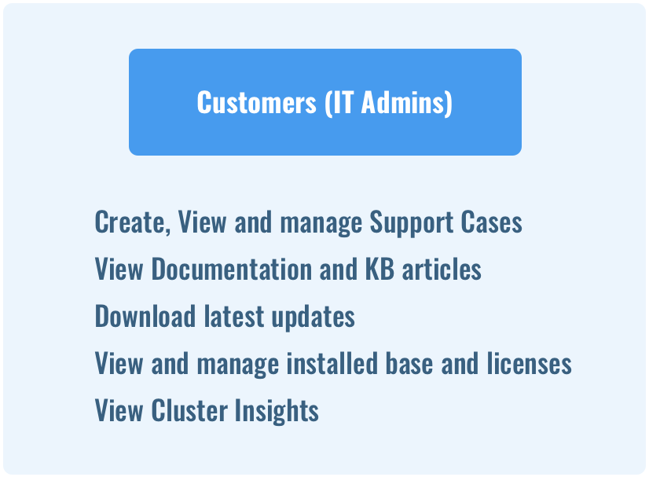
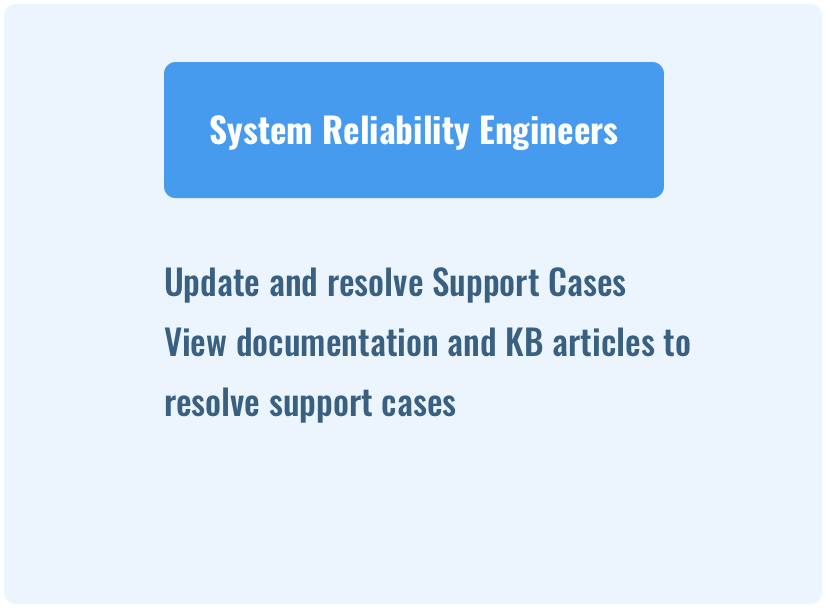
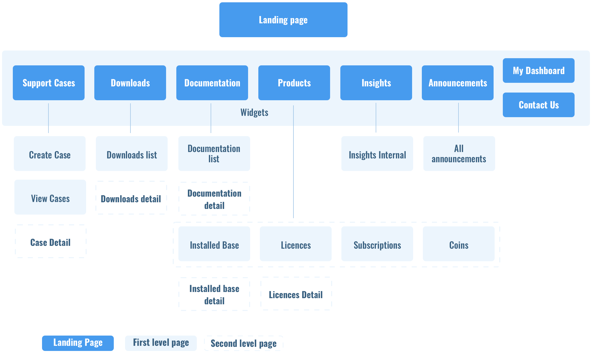
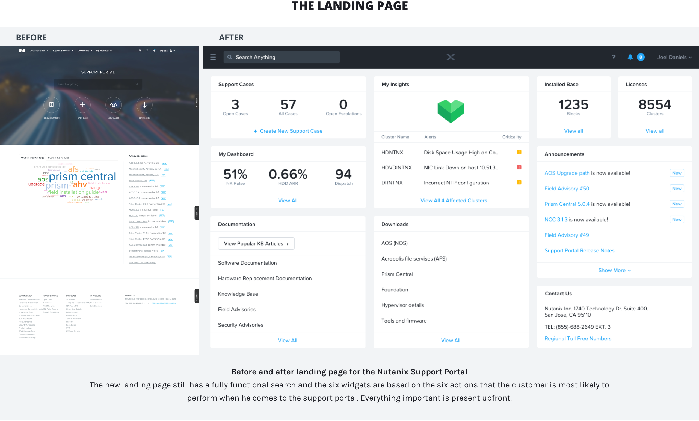
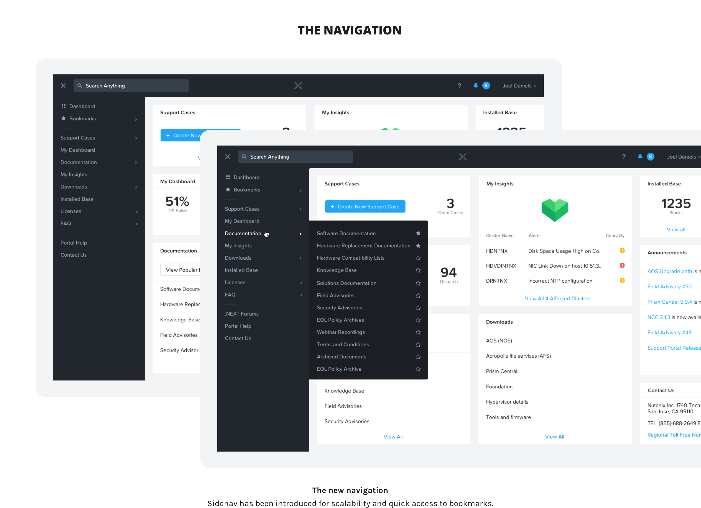
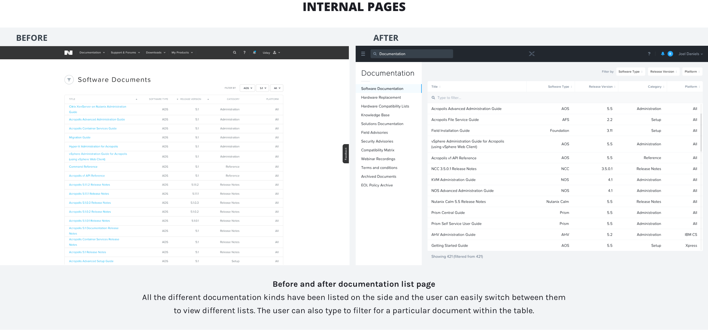
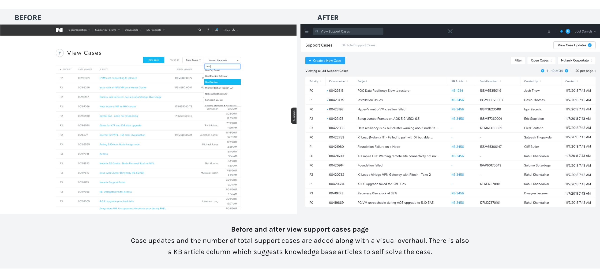
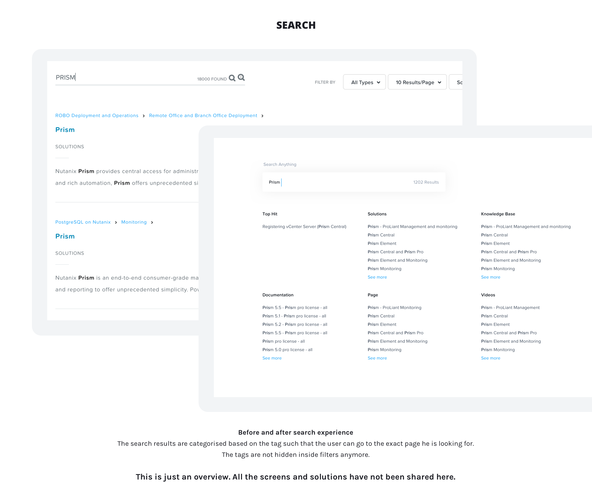

INTERACTION DESIGN + UI/UX
SUPPORT PORTAL REDESIGN
Redesign of the Support Portal for Nutanix, a hyperconverged cloud platform.
OVERVIEW
This project was done for Nutanix, a leading Hyperconverged Infrastructure company which builds software and hardware for enterprise IT admins, to help them manage and store data in their data centers or on the cloud.
This project mainly focuses on the navigation redesign and visual overhaul of the Nutanix Support Portal, to make data within the portal more accessible and user friendly.
ROLE AND DURATION
UX research, information architechture, interaction design, visual design
Design lead, many product leads and 5 + developers
6 months (Jul to Dec 2018)
WHAT DOES THE SUPPORT PORTAL DO?
The Nutanix Support portal is a customer facing portal for all Nutanix customers where they can manage their support cases, download latest software, view relevant documentation and get updates on their installed base, licences and clusters.
WHY THE REDESIGN
The support portal is a really important customer facing tool for Nutanix. With the growth of the company, the existing portal design was not scalable. Also, customers had difficulty finding exactly what they were looking for. Thus, a complete overhaul of the Nutanix Support Portal was required with elegant design and better implementation. The redesign process included understanding the user base and their needs, deep diving into the existing portal and thereby, identifying and improving the existing flaws, in alignment with the project goals.
UNDERSTANDING THE USERS
The Nutanix support portal is used by two major user groups.


THE NEW INFORMATION ARCHITECHTURE AND REDESIGN
The first step was to map the current Information architechture to understand the gaps and problems. Post this, a new information architechture and navigation model was proposed.






THE IMPACT
“The Nutanix Support Portal has been awarded one of the “Top Ten Best Support Websites” for 2018 by the ‘Association of Support Professionals’ (ASP).”
The lead judge who evaluated our support website shared the following feedback:
“The very first impression is ‘I love it.’ As soon as you log in, I can see my open cases, product documentation, downloads, announcements and how to contact support if I need them. OUTSTANDING!!! I like the feature that suggests a self-help path as you are creating a case. There is nothing about the site that I don't like. It is a clean, non-cluttered UI with everything I need available to me on the initial landing page. This site could be a model for other companies looking to build an online support presence.”
KEY TAKEAWAYS
- Break from the norms
Being a support portal, it should not necessarily be search dominated. I broke from the norms and took a widget approach for the portal, while still keeping search an integral part of the landing page.
- Working with developers
This was the first solo project that I was leading where I had to continuously work with the developers to make sure the design and the deliverables were getting implemented properly.
- MVP and good to have features
Often it is important to prioritise and decide what should still be a part of the MVP and what can be developed eventually. This project was a good learning for me in making those decisions.